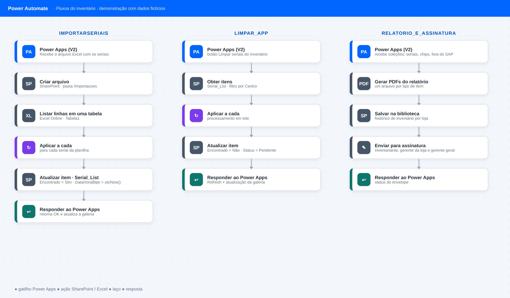
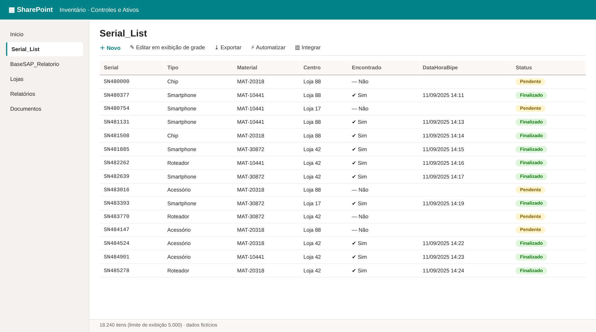

Tela de demonstração com dados fictícios
01
Lógica do negócio
02
Como resolvi com dados
1
Carga da base SAP
Bases do SAP (estoque por serial) alimentam a lista Serial_List no SharePoint.
2
Bipagem no app
O Power Apps registra cada bip, atualiza a galeria e salva automaticamente na lista.
3
Pendências e recontagem
Tela com só o que não foi encontrado; é possível remover um bip e recontar.
4
Importação e lotes
Power Automate importa seriais de um Excel e limpa a lista em lote, sem travar o app.
5
Relatório e assinatura
Prévia no app, PDFs finais, histórico no SharePoint e envio para assinatura eletrônica.
03
Tecnologias utilizadas
Fontes de dados
Bases do SAP (estoque por serial)
Bancos e SQL
SharePoint Lists (Serial_List)
Processamento
Power FxPower Automate
Interface
Power Apps (app de bipagem)
Entrega
Relatório final em PDFAssinatura eletrônica (DocuSign)Histórico no SharePoint
Automação
Importação de seriais via ExcelLimpeza e atualização em lote
04
Funcionalidades
Salvamento automático a cada bip
Remoção de bip com atualização sincronizada
Tela de pendências (itens não encontrados)
Controle de acesso por status da loja
Feedback visual ao usuário
Importação de seriais por Excel
Relatório final e assinatura eletrônica
05
Resultados
2 h → 1 h (≈ −50%)Tempo de bipagem
5 h → 3 h (≈ −40%)Tempo total do inventário
R$ 0 · plataformas já licenciadasCusto adicional de licenças
06
IA aplicada neste projeto
Como usei IA
O Copilot ajudou em melhorias de código (Power Fx) e na criação de cenários de teste do aplicativo.

Miguel Vinicius Moura Martins
Desenhei o aplicativo e os fluxos, modelei as listas e validei o processo em campo, com apoio de IA em melhorias de código e cenários de teste.
Power AppsPower AutomateSharePointInventárioPower FxPower Apps (app de bipagem)